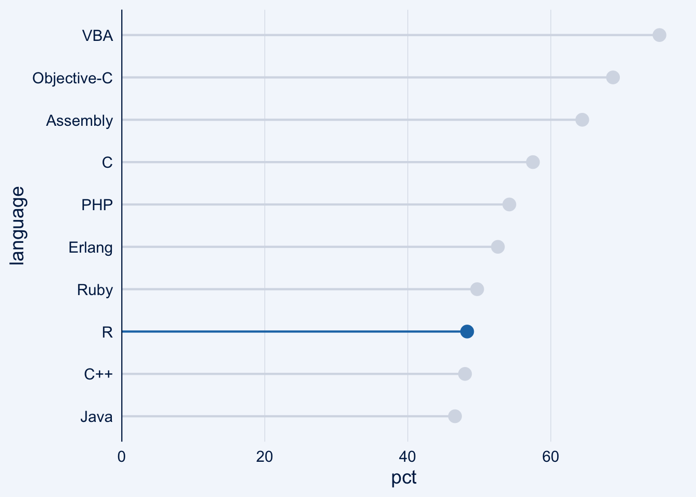
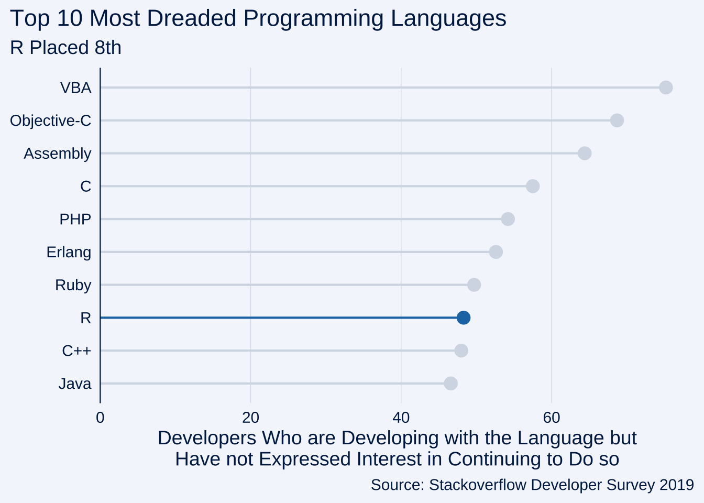
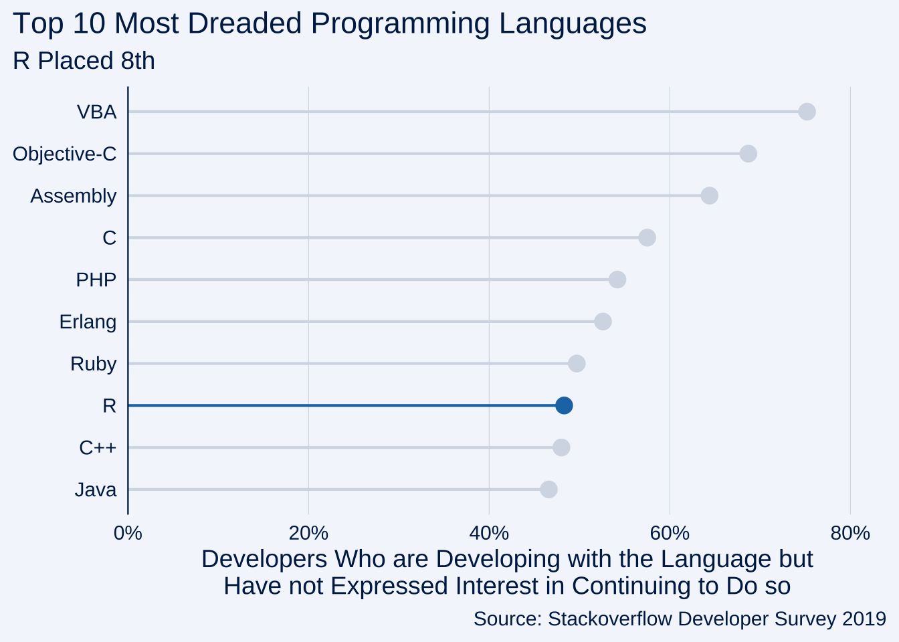
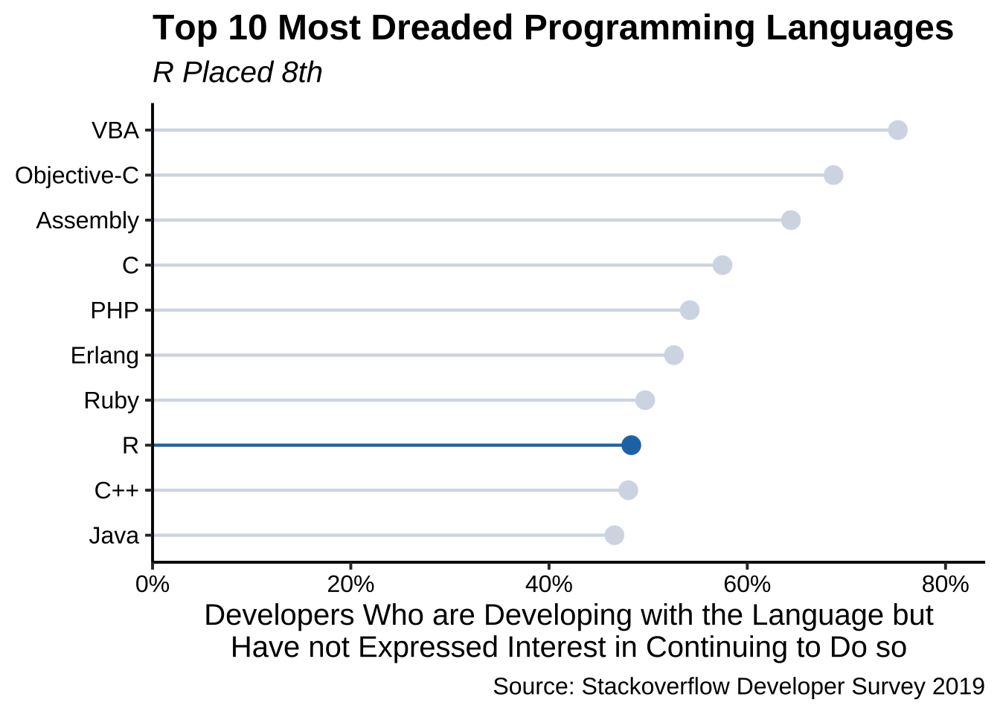

ggcharts aims to shorten the distance from data visualization idea to actual plot. That means it will do much of the work for you but not everything. Some things just cannot be automated, e.g. setting titles and footnotes. This vignette will show you how you can further customize a ggcharts plot using ggplot2 functions.
The data I will use comes from the 2019 Stackoverflow Developer Survey.
library(dplyr) library(ggplot2) library(ggcharts) dreaded_lang <- tibble::tribble( ~language, ~pct, "VBA", 75.2, "Objective-C", 68.7, "Assembly", 64.4, "C", 57.5, "PHP", 54.2, "Erlang", 52.6, "Ruby", 49.7, "R", 48.3, "C++", 48.0, "Java", 46.6 ) (chart <- lollipop_chart(dreaded_lang, language, pct, highlight = "R"))

First of all, a good data visualization needs text. I use the labs() function here but you might as well use ggtitle(), xlab() and ylab() depending on your needs.
chart <- chart + labs( x = NULL, y = "Developers Who are Developing with the Language but\nHave not Expressed Interest in Continuing to Do so", title = "Top 10 Most Dreaded Programming Languages", subtitle = "R Placed 8th", caption = "Source: Stackoverflow Developer Survey 2019" ) print(chart)

Given that the plot displays percentages it is best practice to have the axis labels include the percentages sign. That can be achieved by adding a scale. Note that I use the scale_y_continuous() function here even though I am changing the x axis. That’s because in order to create a horizontal plot ggcharts uses coord_flip() internally which - as the name - suggests flips the axes.
chart <- chart + scale_y_continuous( labels = scales::percent_format(scale = 1), expand = expansion(mult = c(0, .05)), limits = c(0, 80) ) print(chart)

If you only want to change the axis limits then there’s no need to use scale_y_continuous() instead you can use ylim().
The styling of the plot is probably the customization where you will spend most of your time. Just as with any ‘usual’ ggplot you can add any of the built-in themes to a ggcharts plot and tweak it further using the theme() function.
chart <- chart + theme_classic(base_size = 15) + theme( plot.title = element_text(face = "bold"), plot.subtitle = element_text(face = "italic"), axis.text = element_text(color = "black") ) print(chart)
